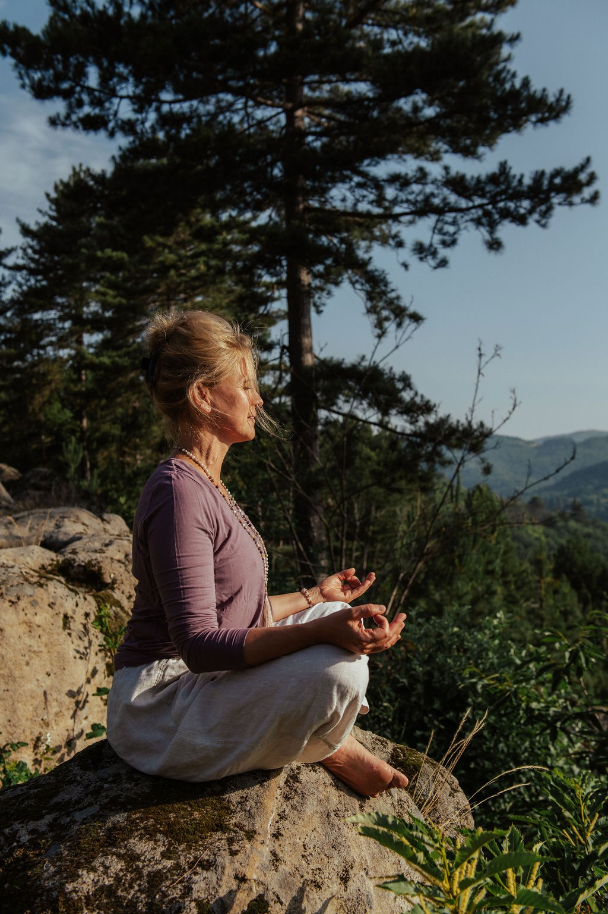

Je m'appelle Olivia Leroy, professeure de yoga depuis 3 ans et pratiquante passionnée depuis 7 ans. Avant de me tourner vers le yoga, j’ai été professeure de Pilates, de Spinning et de renforcement musculaire. Ce parcours m’a permis de développer une approche du mouvement à la fois précise, fluide et respectueuse du corps.
Aujourd’hui, je vous accueille dans ma salle de yoga à Bridel, un espace intime et apaisant, chez moi, où chaque séance devient une parenthèse de reconnexion à soi.
Le Vinyasa yoga est une pratique fluide et dynamique qui synchronise le mouvement et la respiration
Elle vous permet de :
- Développer votre force, votre souplesse et votre équilibre
- Apaiser le mental tout en cultivant l’énergie vitale
- Créer une véritable union entre corps, souffle et esprit
Une expérience complète pour nourrir le corps et l’âme
Chaque séance inclut :
- Des exercices de pranayama pour harmoniser votre énergie
- Des moments de méditation pour cultiver l’ancrage et la pleine conscience
- Des chants de mantras accompagnés à l’harmonium pour élever votre vibration et ouvrir le cœur